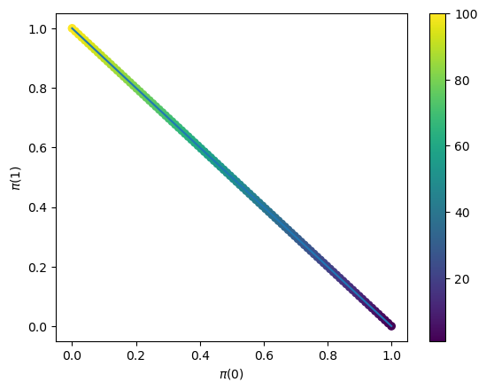

6. Policy Gradient Algorithms#
A key task in RL is finding the optimal policy in a given environment, that is, the policy that achieves the most total reward in all states. Given this task, why not optimize directly over policies?
Algorithms based on this idea are called policy optimization algorithms. We’ve already seen some examples of this, namely Policy iteration for finite MDPs and Iterative LQR in continuous control.
Policy gradient algorithms form a specific subclass for policies that can be described by a set of parameters. These are responsible for groundbreaking applications including AlphaGo, OpenAI Five, and large language models, many of which use policies parameterized as deep neural networks.
We begin the chapter with a short review of gradient ascent, a simple and general optimization method.
We’ll then apply this technique directly to maximize the \hiotal reward.
Then we’ll explore some proximal optimization techniques that ensure the steps taken are “not too large”. This is helpful to stabilize training and widely used in practice.
6.1. Gradient Ascent#
Gradient ascent is a general optimization algorithm for any differentiable function. A suitable analogy for this algorithm is hiking up a mountain, where you keep taking steps in the steepest direction upwards. Here, your vertical position \(y\) is the function being optimized, and your horizontal position \((x, z)\) is the input to the function. The slope of the mountain at your current position is given by the gradient, written \(\nabla y(x, z) \in \R^2\). For differentiable functions, this can be thought of as the vector of partial derivatives,
To calculate the slope (aka “directional derivative”) of the mountain in a given direction \((\Delta x, \Delta z)\), you take the dot product of the difference vector with the gradient. This means that the direction with the highest slope is exactly the gradient itself, so we can describe the gradient ascent algorithm as follows:
Algorithm 6.1 (Gradient ascent)
where \(k\) denotes the iteration of the algorithm and \(\eta > 0\) is a “step size” hyperparameter that controls the size of the steps we take. (Note that we could also vary the step size across iterations, that is, \(\eta^0, \dots, \eta^K\).)
The case of a two-dimensional input is easy to visualize. But this idea can be straightforwardly extended to higher-dimensional inputs.
From now on, we’ll use \(J\) to denote the function we’re trying to maximize, and \(\theta\) to denote the parameters being optimized over.
Notice that our parameters will stop changing once \(\nabla J(\theta) = 0.\) Once we reach this stationary point, our current parameters are ‘locally optimal’ in some sense; it’s impossible to increase the function by moving in any direction. If \(J\) is convex, then the only point where this happens is at the global optimum. Otherwise, if \(J\) is nonconvex, the best we can hope for is a local optimum.
6.1.1. Stochastic gradient ascent#
In real applications, computing the gradient of the target function is not so simple. As an example from supervised learning, \(J(\theta)\) might be the sum of squared prediction errors across an entire training dataset. However, if our dataset is very large, it might not fit into our computer’s memory! In these cases, we often compute some estimate of the gradient at each step, \(\tilde \nabla J(\theta)\), and walk in that direction instead. This is called stochastic gradient ascent. In the SL example above, we might randomly choose a minibatch of samples and use them to estimate the true prediction error. (This approach is known as minibatch SGD.)
def sgd_pseudocode(
θ_init: Params,
estimate_gradient: Callable[[Params], Params],
η: float,
n_steps: int,
):
θ = θ_init
for step in range(n_steps):
θ += η * estimate_gradient(θ)
return θ
What makes one gradient estimator better than another? Ideally, we want this estimator to be unbiased; that is, on average, it matches a single true gradient step:
We also want the variance of the estimator to be low so that its performance doesn’t change drastically at each step.
We can actually show that, for many “nice” functions, in a finite number of steps, SGD will find a \(\theta\) that is “close” to a stationary point. In another perspective, for such functions, the local “landscape” of \(J\) around \(\theta\) becomes flatter and flatter the longer we run SGD.
Note
SGD convergence More formally, suppose we run SGD for \(K\) steps, using an unbiased gradient estimator. Let the step size \(\eta^k\) scale as \(O(1/\sqrt{k}).\) Then if \(J\) is bounded and \(\beta\)-smooth (see below), and the norm of the gradient estimator has a bounded second moment \(\sigma^2,\)
We call a function \(\beta\)-smooth if its gradient is Lipschitz continuous with constant \(\beta\):
We’ll now see a concrete application of gradient ascent in the context of policy optimization.
6.2. Policy (stochastic) gradient ascent#
Remember that in RL, the primary goal is to find the optimal policy that achieves the maximimum total reward, which we can express using the value function we defined in Definition 3.6:
(Note that we’ll continue to work in the undiscounted, finite-horizon case. Analogous results hold for the discounted, infinite-horizon case.)
As shown by the notation, this is exactly the function \(J\) that we want to maximize using gradient ascent. What does \(\theta\) correspond to, though? In general, \(\pi\) is a function, and optimizing over the space of arbitrary input-output mappings would be intractable. Instead, we need to describe \(\pi\) in terms of some finite set of parameters \(\theta\).
6.2.1. Example policy parameterizations#
What are some ways we could parameterize our policy?
If both the state and action spaces are finite, perhaps we could simply learn a preference value \(\theta_{s,a}\) for each state-action pair. Then to turn this into a valid distribution, we perform a “softmax” operation: we exponentiate each of them, and divide by the total:
However, this doesn’t make use of any structure in the states or actions, so while this is flexible, it is also prone to overfitting.
6.2.1.1. Linear in features#
Another approach is to map each state-action pair into some feature space \(\phi(s, a) \in \mathbb{R}^p\). Then, to map a feature vector to a probability, we take a linear combination of the features and take a softmax:
Another interpretation is that \(\theta\) represents the feature vector of the “desired” state-action pair, as state-action pairs whose features align closely with \(\theta\) are given higher probability.
The score function for this parameterization is also quite elegant:
Plugging this into our policy gradient expression, we get
Why can we drop the \(\E \phi(s_\hi, a')\) term? By linearity of expectation, consider the dropped term at a single timestep: \(\E_{\tau \sim \rho_\theta} \left[ \left( \E_{a' \sim \pi(s_\hi)} \phi(s, a') \right) A_\hi^{\pi_\theta}(s_\hi, a_\hi) \right].\) By Adam’s Law, we can wrap the advantage term in a conditional expectation on the state \(s_\hi.\) Then we already know that \(\E_{a \sim \pi(s)} A_\hi^{\pi}(s, a) = 0,\) and so this entire term vanishes.
6.2.1.2. Neural policies#
More generally, we could map states and actions to unnormalized scores via some parameterized function \(f_\theta : \mathcal{S} \times \mathcal{A} \to \mathbb{R},\) such as a neural network, and choose actions according to a softmax: $\(\pi^\text{general}_\theta(a|s) = \frac{\exp(f_{\theta}(s,a))}{\sum_{a'} \exp(f_{\theta}(s,a'))}.\)$
The score can then be written as $\(\nabla \log \pi_\theta(a|s) = \nabla f_\theta(s, a) - \E_{a \sim \pi_\theta(s)} \nabla f_\theta (s, a')\)$
6.2.2. Continuous action spaces#
Consider a continuous \(n\)-dimensional action space \(\mathcal{A} = \mathbb{R}^n\). Then for a stochastic policy, we could use a function to predict the mean action and then add some random noise about it. For example, we could use a neural network to predict the mean action \(\mu_\theta(s)\) and then add some noise \(\epsilon \sim \mathcal{N}(0, \sigma^2 I)\) to it:
Now that we have seen parameterized policies, we can now write the total reward in terms of the parameters:
Now how do we maximize this function (the expected total reward) over the parameters? One simple idea would be to directly apply gradient ascent:
In order to apply this technique, we need to be able to evaluate the gradient \(\nabla J(\theta).\) But \(J(\theta)\) is very difficult, or even intractable, to compute exactly, since it involves taking an expectation over all possible trajectories \(\tau.\) Can we rewrite it in a form that’s more convenient to implement?
6.2.3. Importance Sampling#
There is a general trick called importance sampling for evaluating such expectations. Suppose we want to estimate \(\E_{x \sim p}[f(x)]\) where \(p\) is hard or expensive to sample from. We can, however, evaluate the likelihood \(p(x)\). Suppose that we can sample from a different distribution \(q\). Since an expectation is just a weighted average, we can sample \(x\) from \(q\), compute \(f(x)\), and then reweight the results: if \(x\) is very likely under \(p\) but unlikely under \(q\), we should boost its weighting, and if it is common under \(q\) but uncommon under \(p\), we should lower its weighting. The reweighting factor is exactly the likelihood ratio between the target distribution \(p\) and the sampling distribution \(q\):
Doesn’t this seem too good to be true? If there were no drawbacks, we could use this to estimate any expectation of any function on any arbitrary distribution! The drawback is that the variance may be very large due to the likelihood ratio term. If there are values of \(x\) that are very rare in the sampling distribution \(q\), but common under \(p\), then the likelihood ratio \(p(x)/q(x)\) will cause the variance to blow up.
6.3. The REINFORCE policy gradient#
Returning to RL, suppose there is some trajectory distribution \(\rho(\tau)\) that is easy to sample from, such as a database of existing trajectories. We can then rewrite \(\nabla J(\theta)\), a.k.a. the policy gradient, as follows. All gradients are being taken with respect to \(\theta\).
Note that for \(\rho = \rho_\theta\), the inside term becomes
(The order of operations is \(\nabla (\log \rho_\theta)(\tau)\).)
Note that when the state transitions are Markov (i.e. \(s_{t}\) only depends on \(s_{t-1}, a_{t-1}\)) and the policy is time-homogeneous (i.e. \(a_\hi \sim \pi_\theta (s_\hi)\)), we can write out the likelihood of a trajectory under the policy \(\pi_\theta\):
Note that the log-trajectory-likelihood turns into a sum of terms, of which only the \(\pi_\theta(a_\hi | s_\hi)\) terms depend on \(\theta,\) so we can simplify even further to obtain the following expression for the policy gradient, known as the “REINFORCE” policy gradient:
This expression allows us to estimate the gradient by sampling a few sample trajectories from \(\pi_\theta,\) calculating the likelihoods of the chosen actions, and substituting these into the expression above. We can then use this gradient estimate to apply stochastic gradient ascent.
def estimate_gradient_reinforce_pseudocode(env, π, θ):
τ = sample_trajectory(env, π(θ))
gradient_hat = 0
for s, a, r in τ:
def policy_log_likelihood(θ):
return log(π(θ)(s, a))
gradient_hat += jax.grad(policy_log_likelihood)(θ) * τ.total_reward
return gradient_hat
In fact, we can perform one more simplification. Intuitively, the action taken at step \(t\) does not affect the reward from previous timesteps, since they’re already in the past! You can also show rigorously that this is the case, and that we only need to consider the present and future rewards to calculate the policy gradient:
Exercise: Prove that this is equivalent to the previous definitions. What modification to the expression must be made for the discounted, infinite-horizon setting?
For some intuition into how this method works, recall that we update our parameters according to
Consider the “good” trajectories where \(R(\tau)\) is large. Then \(\theta\) gets updated so that these trajectories become more likely. To see why, recall that \(\rho_{\theta}(\tau)\) is the likelihood of the trajectory \(\tau\) under the policy \(\pi_\theta,\) so evaluating the gradient points in the direction that makes \(\tau\) more likely.
6.4. Baselines and advantages#
A central idea from supervised learning is the bias-variance decomposition, which shows that the mean squared error of an estimator is the sum of its squared bias and its variance. The REINFORCE gradient estimator (6.3) is already unbiased, meaning that its expectation over trajectories is the true policy gradient. Can we find ways to reduce its variance as well?
One common way is to subtract a baseline function \(b_\hi : \mathcal{S} \to \mathbb{R}\) at each timestep \(\hi.\) This modifies the policy gradient as follows:
For example, we might want \(b_\hi\) to estimate the average reward-to-go at a given timestep:
This way, the random variable \(R_\hi(\tau) - b_\hi^\theta\) is centered around zero, making certain algorithms more stable.
As a better baseline, we could instead choose the value function. Note that the random variable \(Q^\pi_\hi(s, a) - V^\pi_\hi(s),\) where the randomness is taken over the actions, is also centered around zero. (Recall \(V^\pi_\hi(s) = \E_{a \sim \pi} Q^\pi_\hi(s, a).\)) In fact, this quantity has a particular name: the advantage function. This measures how much better this action does than the average for that policy. (Note that for an optimal policy \(\pi^\star,\) the advantage of a given state-action pair is always zero or negative.)
We can now express the policy gradient as follows. Note that the advantage function effectively replaces the \(Q\)-function from (6.4):
Note that to avoid correlations between the gradient estimator and the value estimator (i.e. baseline), we must estimate them with independently sampled trajectories:
Definition 6.1 (Policy gradient with a learned baseline)
def pg_with_learned_baseline_pseudocode(env, π, η, θ_init, K, N):
θ = θ_init
for k in range(K):
trajectories = sample_trajectories(env, π(θ), N)
V_hat = fit(trajectories) # estimates the value function of π(θ)
τ = sample_trajectories(env, π(θ), 1)
g = np.zeros_like(θ) # gradient estimator
for h, (s, a) in enumerate(τ):
def log_likelihood(θ_):
return np.log(π(θ_)(s, a))
g += jax.grad(log_likelihood)(θ) * (return_to_go(τ, h) - V_hat(s))
θ += η * g
return θ
Note that you could also generalize this by allowing the learning rate \(\eta\) to vary across steps, or take multiple trajectories \(\tau\) and compute the sample average of the gradient estimates.
The baseline estimation step fit can be done using any appropriate supervised learning algorithm.
Note that the gradient estimator will be unbiased regardless of the baseline.
6.5. Comparing policy gradient algorithms to policy iteration#
What advantages does the policy gradient algorithm have over Policy iteration?
Note
Policy iteration recap Recall that policy iteration is an algorithm for MDPs with unknown state transitions where we alternate between these two steps:
Estimating the \(Q\)-function (or advantage function) of the current policy;
Updating the policy to be greedy w.r.t. this approximate \(Q\)-function (or advantage function).
To analyze the difference between them, we’ll make use of the performance difference lemma, which provides an expression for comparing the difference between two value functions.
Theorem 6.1 (Performance difference lemma)
Suppose Alice is playing a game (an MDP). Bob is spectating, and can evaluate how good an action is compared to his own strategy. (That is, Bob can compute his advantage function \(A_\hi^{\text{Bob}}(s_\hi, a_\hi)\)). The performance difference lemma says that Bob can now calculate exactly how much better or worse he is than Alice as follows:
where \(\rho_{\text{Alice}, s}\) denotes the distribution over trajectories starting in state \(s\) when Alice is playing.
To see why, consider just a single step \(\hi\) of the trajectory. At this step we compute how much better actions from Bob are than the actions from Alice, on average. But this is exactly the average Bob-advantage across actions from Alice, as described in the PDL!
Formally, this corresponds to a nice telescoping simplification when we expand out the definition of the advantage function. Note that
so expanding out the r.h.s. expression of (6.6) and grouping terms together gives
as desired. (Note that the “inner” expectation from expanding the advantage function has the same distribution as the outer one, so omitting it here is valid.)
The PDL gives insight into why fitted approaches such as PI don’t work as well in the “full” RL setting. To see why, let’s consider a single iteration of policy iteration, where policy \(\pi\) gets updated to \(\tilde \pi\). We’ll assume these policies are deterministic. Suppose the new policy \(\tilde \pi\) chooses some action with a negative advantage with respect to \(\pi\). That is, when acting according to \(\pi\), taking the action from \(\tilde \pi\) would perform worse than expected. Define \(\Delta_\infty\) to be the most negative advantage, that is, \(\Delta_\infty = \min_{s \in \mathcal{S}} A^{\pi}_\hi(s, \tilde \pi(s))\). Plugging this into the Theorem 6.1 gives
That is, for some state \(s\), the lower bound on the performance of \(\tilde \pi\) is lower than the performance of \(\pi\). This doesn’t state that \(\tilde \pi\) will necessarily perform worse than \(\pi\), only suggests that it might be possible. If these worst case states do exist, though, PI does not avoid situations where the new policy often visits them; It does not enforce that the trajectory distributions \(\rho_\pi\) and \(\rho_{\tilde \pi}\) be close to each other. In other words, the “training distribution” that our prediction rule is fitted on, \(\rho_\pi\), may differ significantly from the “evaluation distribution” \(\rho_{\tilde \pi}\).
On the other hand, policy gradient methods do, albeit implicitly, encourage \(\rho_\pi\) and \(\rho_{\tilde \pi}\) to be similar. Suppose that the mapping from policy parameters to trajectory distributions is relatively smooth. Then, by adjusting the parameters only a small distance, the new policy will also have a similar trajectory distribution. But this is not very rigorous, and in practice the parameter-to-distribution mapping may not be so smooth. Can we constrain the distance between the resulting distributions more explicitly?
This brings us to the next three methods:
trust region policy optimization (TRPO), which explicitly constrains the difference between the distributions before and after each step;
the natural policy gradient (NPG), a first-order approximation of TRPO;
proximal policy optimization (PPO), a “soft relaxation” of TRPO.
6.6. Trust region policy optimization#
We saw above that policy gradient methods are effective because they implicitly constrain how much the policy changes at each iteration. Can we design an algorithm that explicitly constrains the “step size”? That is, we want to improve the policy as much as possible, measured in terms of the r.h.s. of the Theorem 6.1, while ensuring that its trajectory distribution does not change too much:
Note that we have made a small change to the r.h.s. expression: we use the states sampled from the old policy, and only use the actions from the new policy. It would be computationally infeasible to sample entire trajectories from \(\pi_\theta\) as we are optimizing over \(\theta\). On the other hand, if \(\pi_\theta\) returns a vector representing a probability distribution over actions, then evaluating the expected advantage with respect to this distribution only requires taking a dot product. This approximation also matches the r.h.s. of the PDL to first order in \(\theta\). (We will elaborate more on this later.)
How do we describe the distance between \(\rho_{\theta^{\text{opt}}}\) and \(\rho_{\theta^k}\)? We’ll use the Kullback-Leibler divergence (KLD):
Definition 6.2 (Kullback-Leibler divergence)
For two PDFs \(p, q\),
This can be interpreted in many different ways, many stemming from information theory. One such interpretation is that \(\kl{p}{q}\) describes my average “surprise” if I think data is being generated by \(q\) but it’s actually generated by \(p\). (The surprise of an event with probability \(p\) is \(- \log_2 p\).) Note that \(\kl{p}{q} = 0\) if and only if \(p = q\). Also note that it is generally not symmetric.
Both the objective function and the KLD constraint involve a weighted average over the space of all trajectories. This is intractable in general, so we need to estimate the expectation. As before, we can do this by taking an empirical average over samples from the trajectory distribution. This gives us the following pseudocode:
Definition 6.3 (Trust region policy optimization (exact))
def trpo_pseudocode(env, δ, θ_init, M):
θ = θ_init
for k in range(K):
trajectories = sample_trajectories(env, π(θ), M)
A_hat = fit(trajectories)
def approximate_gain(θ_):
total_advantage = 0
for τ in trajectories:
for s, _a, _r in τ:
for a in env.action_space:
total_advantage += π(θ)(s, a) * A_hat(s, a)
return total_advantage
def constraint(θ_):
kl_div = 0
for τ in trajectories:
for s, a, _r in τ:
kl_div += np.log(π(θ)(s, a)) - np.log(π(θ_)(s, a))
return kl_div <= δ
θ = optimize(approximate_gain, constraint)
return θ
The above isn’t entirely complete: we still need to solve the actual optimization problem at each step. Unless we know additional properties of the problem, this might be an intractable optimization. Do we need to solve it exactly, though? Instead, if we assume that both the objective function and the constraint are somewhat smooth in terms of the policy parameters, we can use their Taylor expansions to give us a simpler optimization problem with a closed-form solution. This brings us to the natural policy gradient algorithm.
6.7. Natural policy gradient#
We take a linear (first-order) approximation to the objective function and a quadratic (second-order) approximation to the KL divergence constraint about the current estimate \(\theta^k\). This results in the optimization problem
where \(F_{\theta^k}\) is the Fisher information matrix defined below.
Definition 6.4 (Fisher information matrix)
Let \(p_\theta\) denote a parameterized distribution. Its Fisher information matrix \(F_\theta\) can be defined equivalently as:
Recall that the Hessian of a function describes its curvature: for a vector \(\delta \in \Theta\), the quantity \(\delta^\top F_\theta \delta\) describes how rapidly the negative log-likelihood changes if we move by \(\delta\). The Fisher information matrix is precisely the Hessian of the KL divergence (with respect to either one of the parameters).
In particular, when \(p_\theta = \rho_{\theta}\) denotes a trajectory distribution, we can further simplify the expression:
Note that we’ve used the Markov property to cancel out the cross terms corresponding to two different time steps.
This is a convex optimization problem with a closed-form solution. To see why, it helps to visualize the case where \(\theta\) is two-dimensional: the constraint describes the inside of an ellipse, and the objective function is linear, so we can find the extreme point on the boundary of the ellipse. We recommend [Boyd and Vandenberghe, 2004] for a comprehensive treatment of convex optimization.
More generally, for a higher-dimensional \(\theta\), we can compute the global optima by setting the gradient of the Lagrangian to zero:
This gives us the closed-form update. Now the only challenge is to estimate the Fisher information matrix, since, as with the KL divergence constraint, it is an expectation over trajectories, and computing it exactly is therefore typically intractable.
Definition 6.5 (Natural policy gradient)
How many trajectory samples do we need to accurately estimate the Fisher information matrix? As a rule of thumb, the sample complexity should scale with the dimension of the parameter space. This makes this approach intractable in the deep learning setting where we might have a very large number of parameters.
As you can see, the NPG is the “basic” policy gradient algorithm we saw above, but with the gradient transformed by the inverse Fisher information matrix. This matrix can be understood as accounting for the geometry of the parameter space. The typical gradient descent algorithm implicitly measures distances between parameters using the typical Euclidean distance. Here, where the parameters map to a distribution, using the natural gradient update is equivalent to optimizing over distribution space rather than parameter space, where distance between distributions is measured by the Definition 6.2.
Example 6.1 (Natural gradient on a simple problem)
Let’s step away from RL and consider the following optimization problem over Bernoulli distributions \(\pi \in \Delta(\{ 0, 1 \})\):
We can think of the space of such distributions as the line between \((0, 1)\) to \((1, 0)\) on the Cartesian plane:
{kind=link}
Clearly the optimal distribution is the constant one \(\pi(1) = 1\). Suppose we optimize over the parameterized family \(\pi_\theta(1) = \frac{\exp(\theta)}{1+\exp(\theta)}\). Then our optimization algorithm should set \(\theta\) to be unboundedly large. Then the “vanilla” gradient is
Note that as \(\theta \to \infty\) that the increments get closer and closer to \(0\); the rate of increase becomes exponentially slow.
However, if we compute the Fisher information “matrix” (which is just a scalar in this case), we can account for the geometry induced by the parameterization.
This gives the natural gradient update
which increases at a constant rate, i.e. improves the objective more quickly than “vanilla” gradient ascent.
Though the NPG now gives a closed-form optimization step, it requires computing the inverse Fisher information matrix, which typically scales as \(O((\dim \Theta)^3)\). This can be expensive if the parameter space is large. Can we find an algorithm that works in linear time with respect to the dimension of the parameter space?
6.8. Proximal policy optimization#
We can relax the TRPO optimization problem in a different way: Rather than imposing a hard constraint on the KL distance, we can instead impose a soft constraint by incorporating it into the objective and penalizing parameter values that drastically change the trajectory distribution.
Here \(\lambda\) is a regularization hyperparameter that controls the tradeoff between the two terms.
Like the original TRPO algorithm Definition 6.3, PPO is not gradient-based; rather, at each step, we try to maximize local advantage relative to the current policy.
How do we solve this optimization? Let us begin by simplifying the \(\kl{\rho_{\pi^k}}{\rho_{\pi_{\theta}}}\) term. Expanding gives
where \(c\) is some constant with respect to \(\theta\), and can be ignored. This gives the objective
Once again, this takes an expectation over trajectories. But here we cannot directly sample trajectories from \(\pi^k\), since in the first term, the actions actually come from \(\pi_\theta\). To make this term line up with the other expectation, we would need the actions to also come from \(\pi^k\).
This should sound familiar: we want to estimate an expectation over one distribution by sampling from another. We can once again use Importance Sampling to rewrite the inner expectation:
Now we can combine the expectations together to get the objective
Now we can estimate this function by a sample average over trajectories from \(\pi^k\). Remember that to complete a single iteration of PPO, we execute
If \(\ell^k\) is differentiable, we can optimize it by gradient ascent, completing a single iteration of PPO.
def ppo_pseudocode(
env,
π: Callable[[Params], Callable[[State, Action], Float]],
λ: float,
θ_init: Params,
n_iters: int,
n_fit_trajectories: int,
n_sample_trajectories: int,
):
θ = θ_init
for k in range(n_iters):
fit_trajectories = sample_trajectories(env, π(θ), n_fit_trajectories)
A_hat = fit(fit_trajectories)
sample_trajectories = sample_trajectories(env, π(θ), n_sample_trajectories)
def objective(θ_opt):
total_objective = 0
for τ in sample_trajectories:
for s, a, _r in τ:
total_objective += π(θ_opt)(s, a) / π(θ)(s, a) * A_hat(s, a) + λ * np.log(π(θ_opt)(s, a))
return total_objective / n_sample_trajectories
θ = optimize(objective, θ)
return θ
6.9. Summary#
Policy gradient methods are a powerful family of algorithms that directly optimize the total reward by iteratively updating the policy parameters.
TODO
Vanilla policy gradient
Baselines and advantages
Trust region policy optimization
Natural policy gradient
Proximal policy optimization